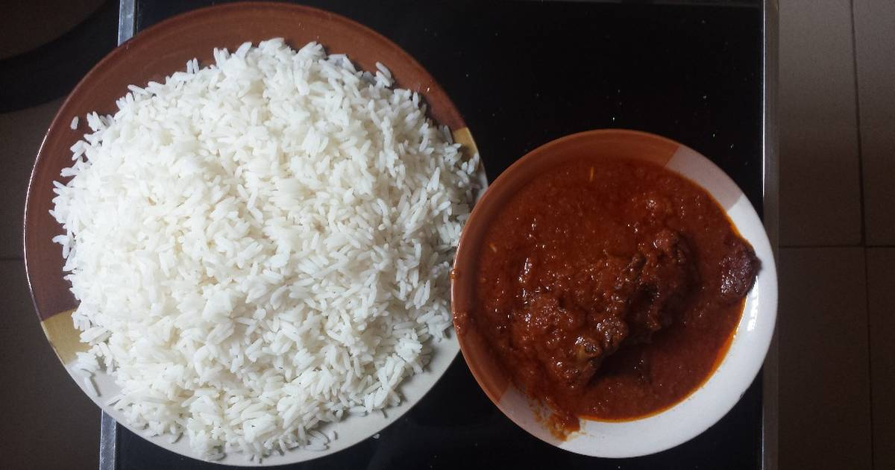

Stew Rice

Description
Rice and Stew' is one of the most popular dishes in Nigeria.
It is as simple as rice and stew but garnishing makes this dish more interesting
Ingredients
- 3 cups of white rice
- 1 teaspoon of salt
- 1kg of beef
- 3 cups of stock
- 4 cups blended tomatoes
- Chilli pepper to taste
- 1 paprika
- 2 medium, size onion bulb,
- 1 teaspoon of curry
- Half teaspoon of thyme
- 1 garlic clove, crushed
- 1 teaspoon of freshly grated ginger
- 1 Seasoning cube
- 1 cup of vegetable oil
Steps
- Boil the rice with salt until is cooked and dry
- Season beaf properly to get the stock
- When it is cooked, you could fry or grill the meat if you like
- Pour the vegetable oil into a pot and place on heat
- hrow in the chopped onions when the oil is hot
- Pour the blended tomatoes into the pot and allow to cook for about 10mins
- Pour in the stock and cook further
- Add the seasoning cube, ginger, crushed garlic, curry and thyme
- Cook for another 20mins
- Add the meat and salt to taste